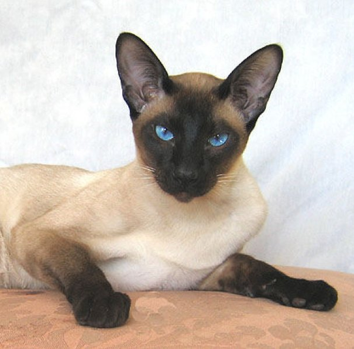
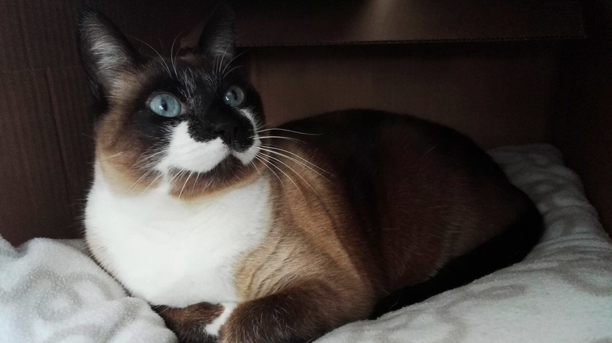

¿Qué es un siames?
Los siameses son una de las razas felinas mas famosas y antiguas del mundo, se trata de un gato originario de Tailandia, de razgos elegantes, de tamaño medio, cuerpo tonificado y pelaje fino con pigmenacion en la cara, orejas, patas y cola.
Historia
El gato siamés es, junto al persa, una de las razas de gatos más antiguas y conocidas. el primer gato registrado que menciona las caracteristicas de un siames fue en 1350, la raza proviene de Tailandia y solia referirse como gato "Thai", los primeros gatos Thai con el tiempo pasaron a llamarse Siameses en momeria a su lugar de origen "Siam", convirtiendose en los gatos siameses modernos.
Los primeros gatos siameses que entraron en sociedad lo hicieron por el año 1871 en Inglaterra. y en 1884 se comienza a reconocer como raza, con su color característico, líneas alargadas del cuerpo, su forma característica de la cabeza, etc. llegaron a Inglaterra, donde se comenzó la cría de esta raza. En 1892 ya se estableció el primer estándar para los gatos siameses, pero la raza solo fue reconocida en 1949 por la Federación Internacional Felina (FIFe).
La leyenda cuenta que tener un gato siamés era muy difícil,ademas de que los gatos de esa raza estaban unicamente dentro del palacio. Era una raza exclusiva de la realeza siamesa ya que era un animal sagrado para estos. Sólo era posible conseguir uno y debie ser un regalo como recompensa al hacerle un favor al rey de Siam, en Tailandia.
Caracteristicas
- Son muy cariñosos, tanto con personas familiarizadas o desconocidas
- Estos gatos suelen apegarse mas a su familia que las demas razas
- Demandan atencion con frecuencia, mas que otros gatos
- Son muy ssociables, necesitan participar y si hace falta elevar la voz. si algo no les agrada lo haran notar
- Les encantar estar acompañados por personas y que estas los entretengan
- El regalar un gato siames a una familia que estrena casa, signifia el llevar estabilidad y prosperidad a esa vivienda
- Estos gatos padecen en su mayoria, estrabismo
Gatos Magicos
Los gatos Thai, osea los siameses originales. Eran considerados gatos magicos, los tenian presentes al momento de llevarse a cabo eventos importantes como ser las coronaciones despues falleser el monarca.
Cuando se llegaba a perder la vida el Rey de Siam, se llevaba acabo un ritual para que el alma del difunto rey pasara al cuerpo del gato Thai antes de anceder su alma al cielo, de esta manera el monarca podia estar presenta en la coronacion del sucesor a este. Una vez concluida, se llevaba al gato a un templo donde seria rodeado de lujos el resto de su vida.
Existe otra leyende que explica el por que algunos de estos gatos cuentan con colas torcidas, estas son asi pues evitaban que se caigan los anillos de las princesas que ponian en sus colas cuando esta no las usen, se creia que si alguien intentaba robar el anillo de la cola de un siames, este anillo se ira volviendo invisible mientras mas cerca este al extremo de la cola.
Galeria
|
 |
|  |
 |